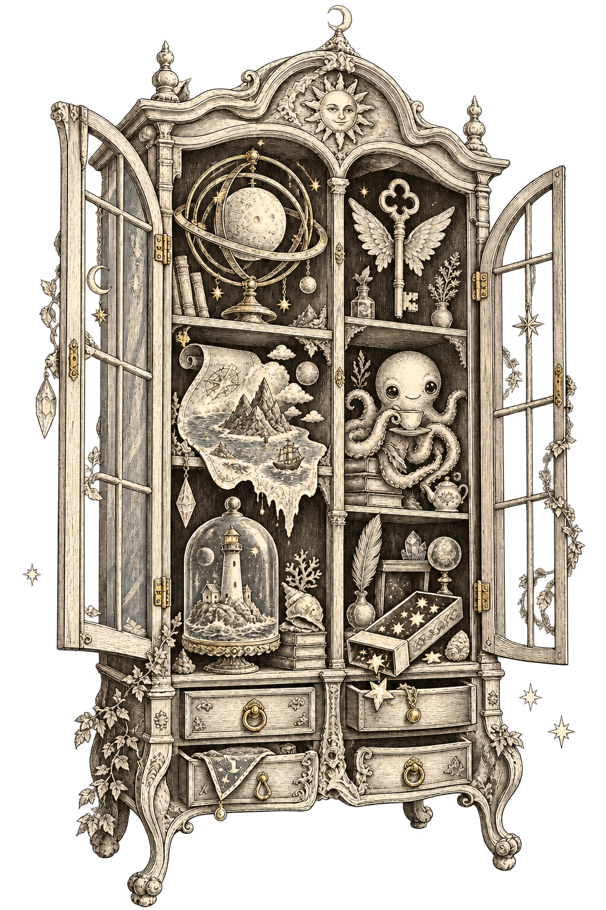
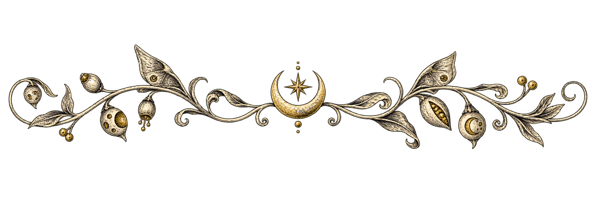
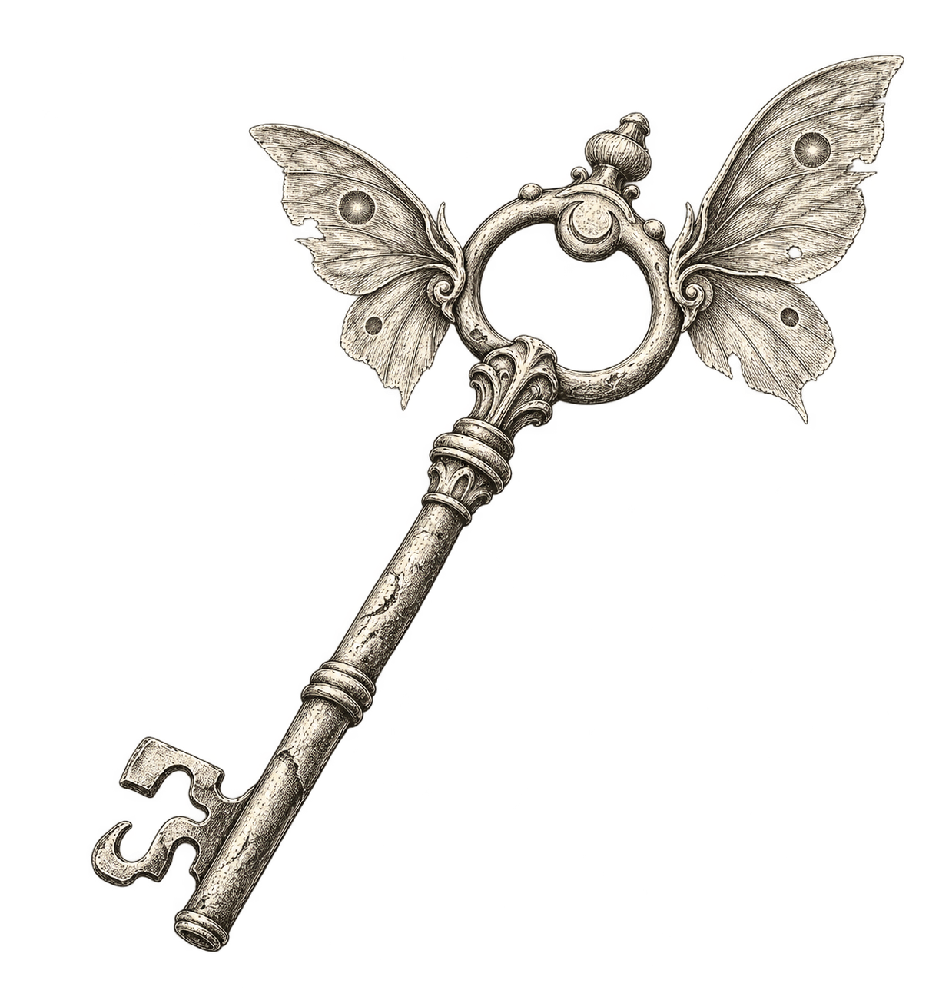
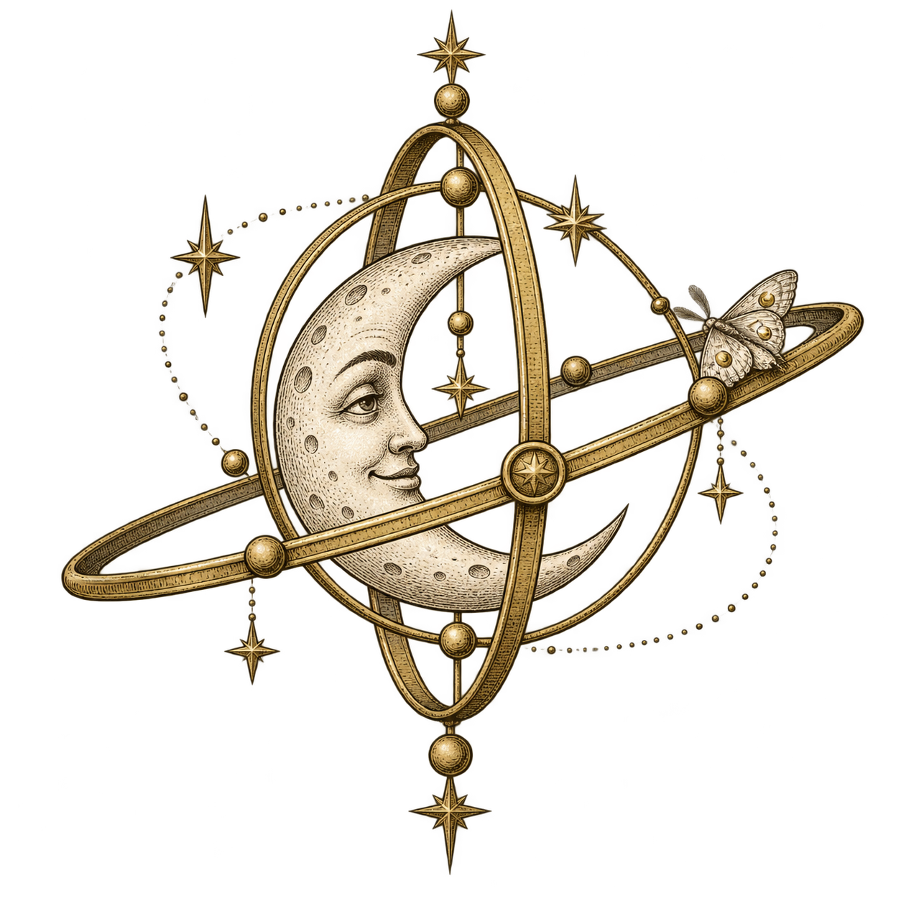

Oddities · Market findsSample result
The key that hums
A brass key hums whenever its owner tells the truth. Its tiny wings fold neatly into the teeth. Nobody remembers which door it opens.
Specimen results are fictional examples.
Maps that refuse to stay folded. Keys to rooms that have not been built. What will you find?
Interactive style sample. No collections or saved rolls are changed.


A brass key hums whenever its owner tells the truth. Its tiny wings fold neatly into the teeth. Nobody remembers which door it opens.
Specimen results are fictional examples.

Fantasy · Strange objects
12 tables · Illustration belongs to the collection
Maker’s desk: clear labels, quiet fields, useful detail.

A room full of possibilities.
Display lettering gives the cabinet its silhouette. Body text makes a long result easy to use at the table. Labels stay plain and precise.
{ "weight": 3, "result": "A moon in a matchbox" }
Font families are proposals. This offline specimen uses installed fonts and system fallbacks; it does not download font assets.
Real sRGB calculation from computed token colors. Essential text needs 4.5:1; control boundaries need 3:1.